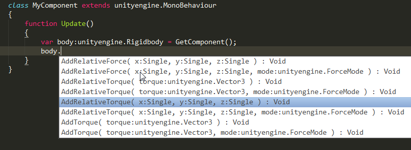

Вышел Haxe 3.1!
(This is a translation of my original overview to Russian, as requested by Russian Haxe Community. Это перевод моего оригинального обзора на английский по просьбе русского сообщества Haxe).
Новый релиз компилятора Haxe наконец-то вышел в свет, спасибо разработчикам, контрибьюторам и всем сочувствующим (даже я немного помог, ура-ура!)
Итак, давайте посмотрим, что появилось нового, кроме горы багфиксов (особенно по abstract'ам, введенным в 3.0)...
Enum abstracts
Об этой фиче я писал почти сразу как она появилась в гит-репозитории Haxe. Соответствуя своему названию, enum abstract'ы, являются комбинацией enum'ов и abstract'ов и используются для определения набора констант определенного типа, с compile-time поддержкой проверок правильности и полности. Подробнее, вы можете почитать в моем оригинальном посте на английском, но выглядят они как-то так:
@:enum abstract State(Int)
{
var Idle = 0;
var Walk = 1;
var Fire = 2;
}Переменные, заданные в abstract'е становятся public static inline переменными типа State, который является abstract'ом над Int, как мы указали выше, их можно использовать как State.Idle, или даже просто Idle, если компилятор значет, что выражение должно быть нашего типа State, так же как с enum'ами в Haxe. При этом в run-time, эти значения будут обычными целыми числами, потому что так устроены abstract'ы.
Extractors
Экстракторы (extractor) - интересное нововведение для паттерн-матчинга, они позволяют обработать значение перед сопоставлением с шаблоном внутри case-выражения. Синтаксис следующий: expr => pattern, где expr - произвольное выражение экстрактора, в котором можно использовать оргинальное сопоставляемое значение через идентификатор _. Например:
var s = "hello";
switch (s)
{
case _.toUpperCase() => "HELLO":
trace(1);
case StringTools.urlDecode(_) => "hello":
trace(2);
case "a" + _ => "ahello":
trace(3);
}Одно из мест, в которых удобно использовать экстракторы - работа с haxe.macro.Type, поскольку эти значения часто имеют объекты-ссылки Ref<T>, которые нужно разыменовать перед дальнейшим сопоставлением, например проверка на то, является ли тип строкой (String) теперь можно записать так:
var a = Context.getLocalType();
switch (a)
{
case TInst(_.get() => {pack: [], name: "String"}, []):
case _:
}EnumValue.match
Это небольшое, но полезное дополнение к enum'ам, позволяющее проверять, соотвествует ли указанное значение enum шаблону. Теперь, вместо такого:
var matches = switch (a) { case A(1): true; default: false; };Можно просто писать:
var matches = a.match(A(1));Подключение .NET библиотек напрямую для C#
Теперь вы можете напрямую подключать .NET-библиотеки при компиляции в C#-таргет, так же как это уже делается для Flash и Java. Компилятор парсит файл .NET assembly (DLL-ку), вытаскивая из неё и конвертируя типы в Haxe. Это избавляет от необходимости писать extern-объявления для .NET-библиотек. Делается это через аргумент командной строки -net-lib MyLib.dll. Вот картинка для привлечения внимания:

В дополнение к этой фиче, C#-таргет теперь поддерживает аттрибуты, делегаты и события .NET, а все это нововведения вместе взятые должны сильно улучшить возможности взаимодействия Haxe и C#.
Кроме этих мощнейших нововведений, C#-таргет получил большую долю любви, связанной с тестированием, исправления багов и общей стабилизации.
Generic build
Об этом я так же недавно уже писал. Это новое средство генерации типов через макросы и лично я думаю, что это очень большая фича и что она найдет множество применений (в статье я описываю одно, которое я уже нашел).
Основная идея в том, что вы можете изменить или даже построить новый тип для каждого экземпляра (специфицкации) шаблонного (параметризованного) типа. Вы указываете функцию построения с помощью меты @:genericBuild, так же как с @:build-макросами, но вместо возвращения списка полей для строящегося типа, build-функция возвращает целый тип. И самое главное то, что макрос @:genericBuild будет выполнен для каждой комбинации параметров типа, поэтому вы можете генерировать тип на основе указанных параметров.
Например, это позволяет реализовать @:generic через макросы, как показал в оригинальном пулл-реквесте Simon Krajewski, или заменить MacroType гораздо более красивым синтаксисом, или реализовать константные (read-only) типы, как делаю я. Для подробностей, читайте мой оригинальный пост.
Синтаксис для ECheckType
Те, кто работают с макросами вероятно знают про ECheckType - выражение-обертка, позволяющее проверить, подходит ли данное выражение под указанный тип. Однако, несмотря на то что это выражение, в Haxe не было синтаксиса для него, и его можно было сгенерировать только через макрс. Теперь, для этого появился новый синтаксис: (expr : MyType), где expr - любое выражение, а MyType - указанный тип. Результат такого выражения будет указанного типа, поэтому его можно использовать для типизации Dynamic или конвертации abtract'ов через @:to. Например:
static function getData():Dynamic return "hello";
static function main()
{
trace((getData() : String).toLowerCase());
}Типизированное AST
Это дополнение API макросов Haxe. Теперь появился доступ к синтаксическому дереву (AST) после того как оно полностью обработано и типизировано, но до непосредственного вывода сгенерированного (байт)кода. Структура данных для этого - TypedExpr из модуля haxe.macro.Type, который был просто ссылкой 3.0, теперь это структура, похожая на haxe.macro.Expr, но содержащая информацию о типе выражения и имеющая больше смысла с точки зрения структуры программы. Например, вместо работы с идентификаторами, вы работаете с локальными переменными и полями. Это имеет множество применений, например в статическом анализе или генерации новых таргетов, как показал нам Heinz Hölzer в своем проекте hx2python.
Context.getExpectedType
Продолжая тему API макросов, замечу еще одно небольшое дополнение: Context.getExpectedType - функция, возвращающая тип выражения, ожидаемый в месте вызова макроса. Например, она возвращает Int для вот такого вызова макроса: var a:Int = myMacroCall();
Итак...
Релиз Haxe 3.1 выглядит более стабильным чем 3.0, принимая во внимание колиество исправленных багов, а новые фичи безусловно делают язык более выразительным. Хотелось бы выразить особую благодарность Andy Li, который настроил запуск юнит-тестов Haxe на Travis CI, тем самым обеспечив стабильность всему проекту Haxe.